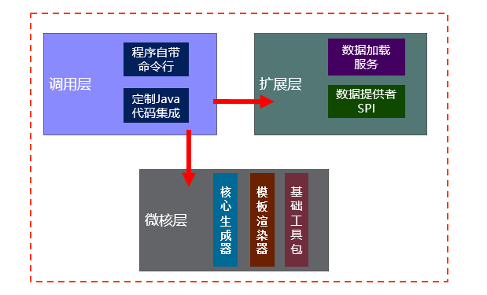

Home
2.0 idea插件版教程(推荐使用)
插件模板自定义
1.0 命令行版教程
快速开始
高级教程
提供者yaml
提供者jdbc
Published with GitBook
1.0 命令行版教程
程序介绍
一个代码生成器，通过数据组件和个性化配置，可以用在不同场景中。
生成项目骨架（前端，后端，移动，中间件等，不限语言框架）
生成业务代码（比如Java程序常见的Model,DAO,DTO,Service等）
设计思想
只用于生成代码或文档场景,使用者为技术人员
模板采用freemaker,模板功能强大,同时互联网高性能模板是velocity,可以避免语法冲突和转义
采用微核结构,保证稳定性和扩展性
代码开源,不使用闭源组件
程序结构

results matching "
"
No results matching "
"